Manual de a bordo
Acceso exclusivo para clientes de BiziVan. Introduce el código que te hemos facilitado.
Código incorrecto. Vuelve a intentarlo.
¿No tienes el código? Escanea el QR de la camper o pídenoslo por WhatsApp.
Acceso exclusivo para clientes de BiziVan. Introduce el código que te hemos facilitado.
Código incorrecto. Vuelve a intentarlo.
¿No tienes el código? Escanea el QR de la camper o pídenoslo por WhatsApp.
Aquí tienes todo lo que necesitas durante el viaje: checklists rápidas y vídeos cortos de cada función de la camper. En la entrega te lo explicamos todo con calma — esto es para consultarlo en ruta.
2 minutos que evitan sustos. Repásala cada vez que muevas la camper.
La camper se conduce como una furgoneta normal, con carnet B. Solo ten en cuenta esto:
Está situado a la izquierda del volante. Acostúmbrate a él antes de salir.
Ajústalos bien antes de arrancar: no hay espejo interior con visión trasera.
La camper es alta. Atención en parkings, gasolineras, puentes y ramas.
Conduce con suavidad, especialmente en curvas y con viento lateral.
Luces, calefacción, gas y ventanas: cada vídeo dura menos de un minuto.
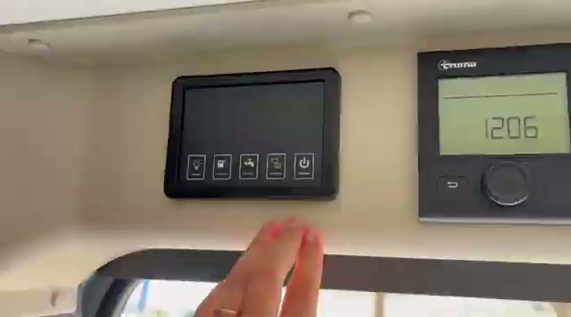
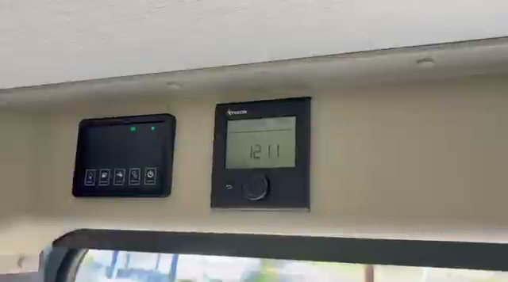
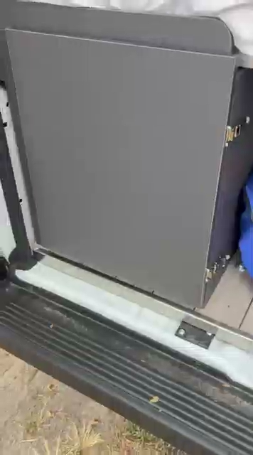
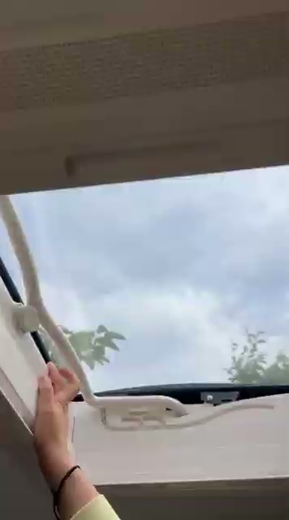
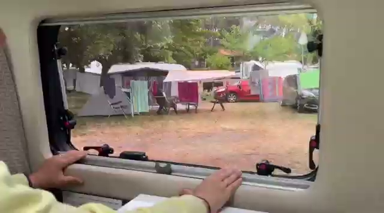
Agua limpia, aguas grises y WC químico (el "poty"): así funciona todo.
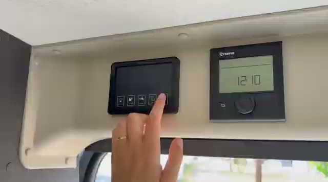
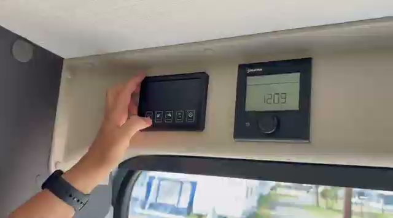
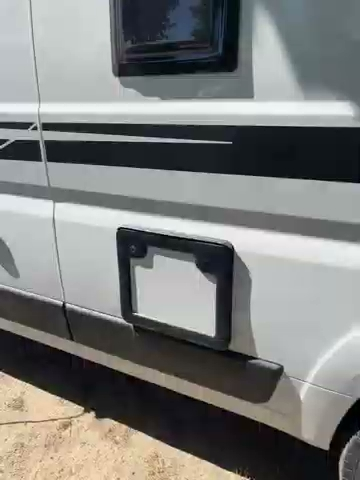
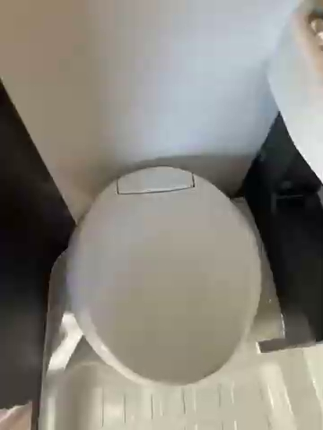
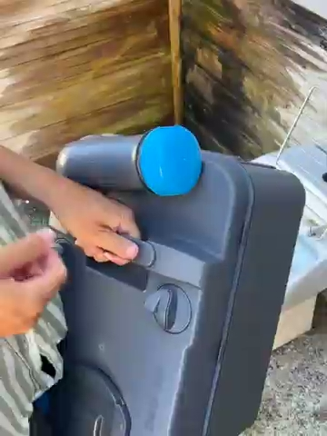
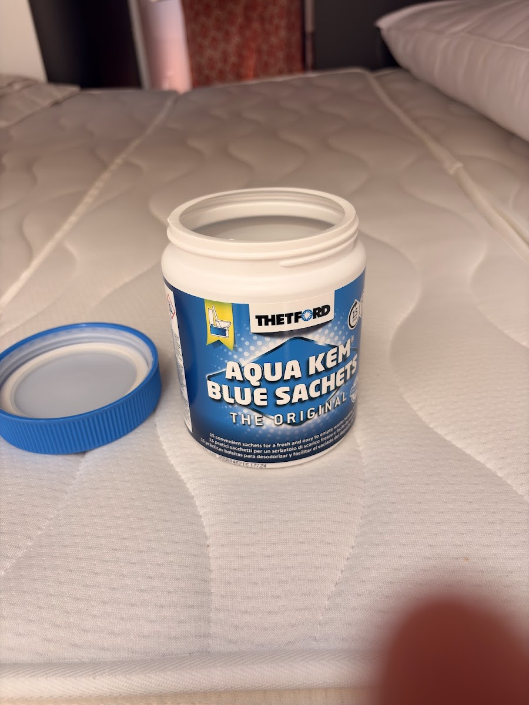
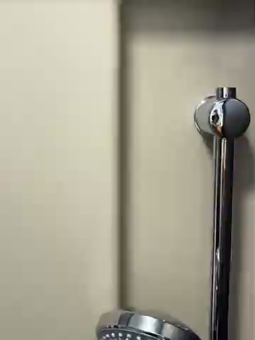
Conectar la corriente y desplegar el toldo, paso a paso.
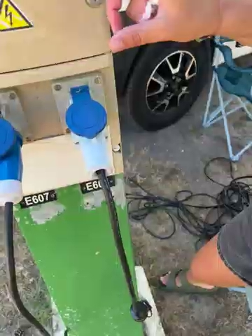
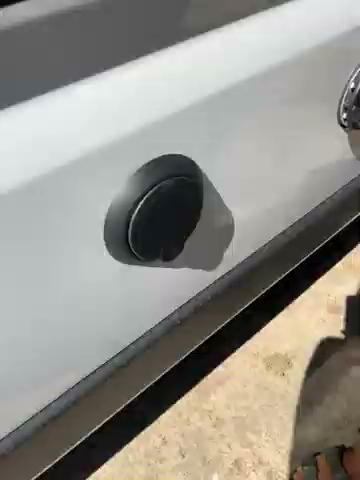
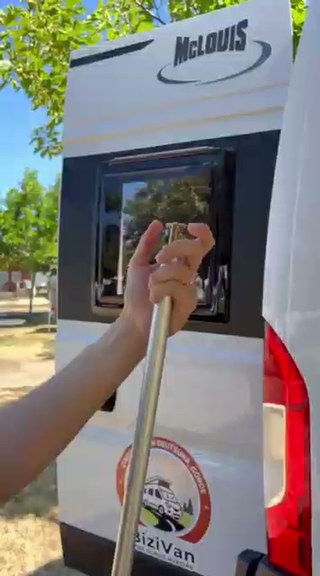
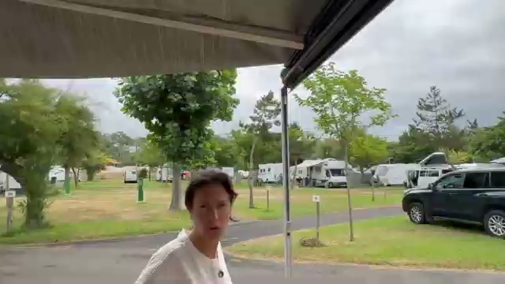
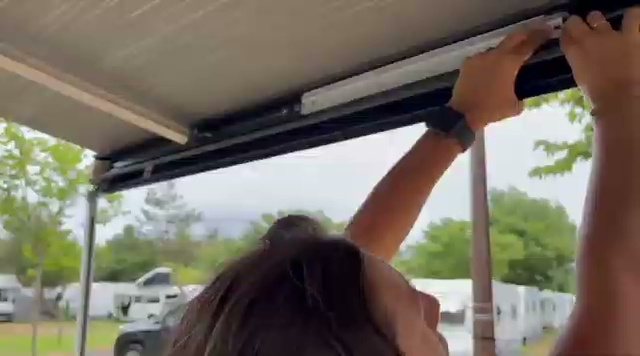
Repasa esta lista el último día, con calma.
Escríbenos o llámanos sin problema, estamos para ayudarte. Si es algo de la camper, mándanos un vídeo por WhatsApp y te guiamos.